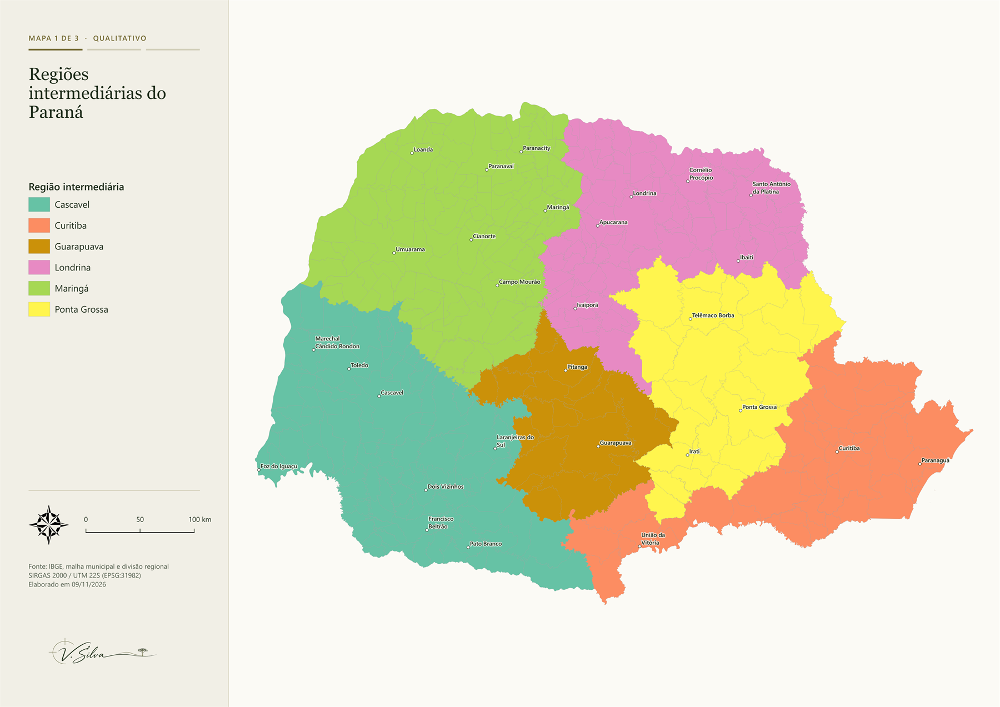
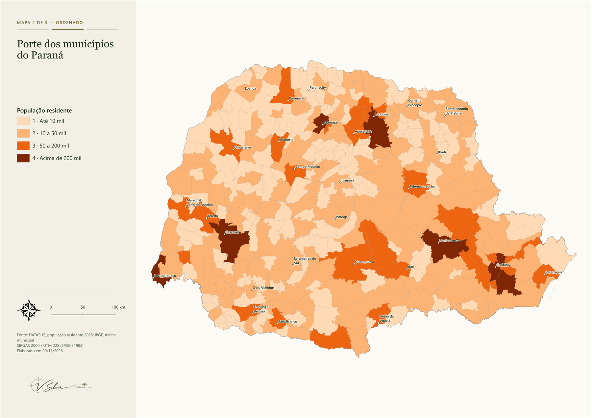
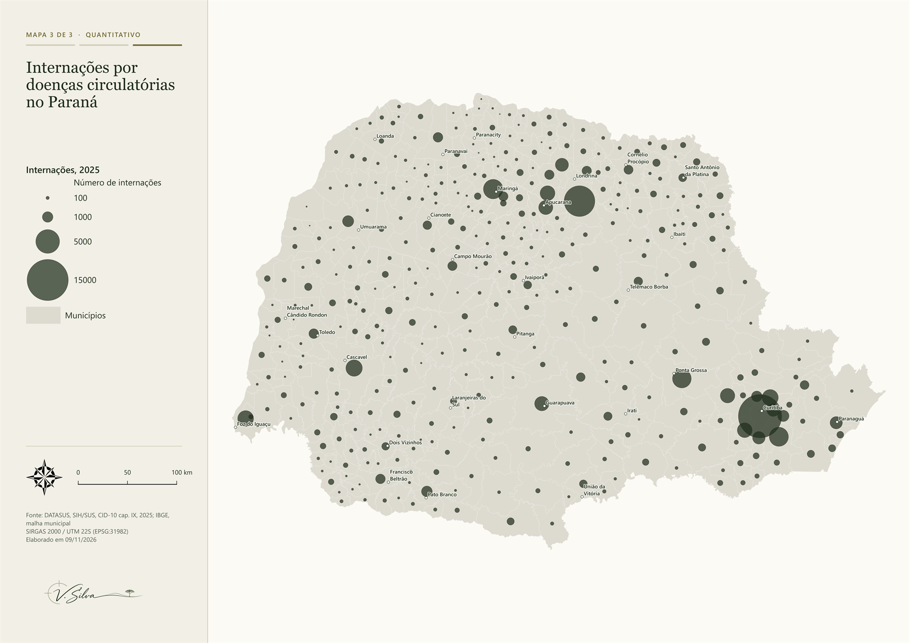

Variáveis visuais em três mapas do Paraná
Há diferentes tipos de variáveis e diferentes formas de representá-las. Entender a intenção do mapa a ser elaborado é importante para decidir qual símbolo usar. Um mapa pode mostrar nomes, como as regiões, classes, como o porte dos municípios, ou quantidades, como o número de internações. Cada tipo de dado permite dizer coisas diferentes e pede uma variável visual diferente: cor, claro e escuro, ou tamanho. Para comparar, fiz três mapas, um para cada tipo.
Os três usam a mesma base da Publicação 01: os 399 municípios do Paraná, da malha municipal do IBGE de 2025, com a população e as internações do DATASUS, também de 2025. A extensão e a escala são iguais nos três, então o que muda de um mapa para o outro é só o símbolo.
| Dados | Malha municipal e regiões intermediárias do IBGE, 2025; população residente, 2025; internações por doenças do aparelho circulatório (CID-10, cap. IX), DATASUS/SIH, 2025; pontos de referência dos polos das regiões geográficas imediatas, Paraná Interativo |
|---|---|
| Método | Mapa qualitativo por cor; mapa ordenado por claro e escuro, em 4 classes de porte; mapa quantitativo com círculos proporcionais à área |
| Ferramentas | QGIS |
| Projeção | SIRGAS 2000 / UTM 22S (EPSG:31982) |
Regiões intermediárias
O primeiro mapa representa as regiões intermediárias do Paraná. Como região intermediária é um nome, e não uma medida, a melhor forma de representá-la é por cor. Não dá para dizer que Cascavel é maior ou vem antes de Londrina, então o símbolo só precisa mostrar que as regiões são diferentes. Por isso usei seis cores diferentes, com intensidade parecida. Se uma região ficasse bem mais escura que as outras, o mapa passaria a sugerir uma ordem entre elas.

Nenhuma região chama mais atenção que as outras. Observando o mapa, percebo que seis cores parecem chegar perto do limite visual. Elas se aproximam das cores primárias e secundárias, então, com uma categoria a mais, a nova cor ficaria parecida com alguma das que já foram usadas, e a leitura começaria a ficar confusa. Usando versões mais escuras das cores existentes, como um verde, um azul, um vermelho e um roxo mais escuros, daria para chegar a cerca de 10 cores distintas, mas com o risco de sugerir uma ordem. Por isso, esse recurso deve ser usado com cautela.
Porte dos municípios
Para o segundo mapa, separei a população dos municípios em quatro classes. Mesmo a população sendo um número, ao segmentá-la em classes o valor exato se perde, ficando apenas a posição de cada município. Então, o que era um dado quantitativo passou a ser um dado ordenado.
Como dado ordenado, as classes seguem uma sequência, do menor para o maior, então uma escala de cor do claro para o escuro se encaixa bem nesse tipo de mapa. Com uma cor só em quatro tons, dá para ver qual classe é a maior sem precisar consultar a legenda: o mapa por si só já apresenta o resultado. Se fossem usadas cores diferentes, seria preciso ler a legenda para interpretá-lo.

Um resultado interessante deste mapa é que dá para perceber que poucos municípios do Paraná têm mais de 50 mil habitantes.
Internações
O terceiro mapa mostra o número de internações por doenças do aparelho circulatório em cada município, em 2025. Aqui o dado é uma contagem: além de dizer qual município tem mais internações, dá para dizer quantas vezes mais e somar os valores de uma região, caso o valor de cada símbolo estivesse indicado no mapa. Para esse tipo de dado usei o tamanho, com um círculo no centro de cada município e os municípios em cinza-claro, como fundo. A ideia é que, quem olha um círculo com o dobro da área, entenda que ali há o dobro de internações.
Para essa leitura funcionar, é a área do círculo que precisa ser proporcional ao número de internações, e não o diâmetro. Por isso é preciso atenção ao método de escala escolhido no QGIS, que explico mais adiante. Londrina, por exemplo, tem cerca de metade das internações de Curitiba. Com a área proporcional, o círculo de Londrina tem metade da área do círculo de Curitiba. Se o diâmetro fosse proporcional, o círculo teria metade da largura, mas só um quarto da área, e Londrina pareceria ter bem menos internações do que tem.
Na prática, isso depende de como o tamanho é configurado no QGIS. O tamanho de cada círculo vem do número de internações do município e é definido em Propriedades da camada → Simbologia → Tamanho, no botão de substituição definida por dados, pela opção Assistente. É nessa janela que se escolhe o método de escala, ou seja, a regra que transforma o número de internações no tamanho do círculo. Há quatro opções: Raio, Superfície, Exponencial e Compensação de aparência. Fica a dica para quem usa o QGIS em português: a Compensação de aparência é o método Flannery, como aparece na versão em inglês e na literatura de cartografia. Quando percebi, já tinha usado o método Superfície.
Na mesma janela, além do método, se define a faixa de valores e a faixa de tamanhos. Usei valores de 0 a 16.580 internações, que é o número de Curitiba, e tamanhos de 0 a 20 mm. Começar as duas faixas em zero faz com que o tamanho do círculo dependa só da proporção entre os valores: um município com metade das internações de Curitiba fica com um círculo de metade da área. Se a faixa de valores começasse em 10, o menor valor da camada, Santa Inês ficaria com um círculo de 0 mm e sumiria do mapa. Além disso, entre um município com 20 internações e outro com 40, o segundo deveria ter um círculo com o dobro da área do primeiro, mas com a faixa começando em 10 ele ficaria com uma área 3 vezes maior. Começando em zero, a área fica com o dobro, como deve ser. Para o maior círculo considerei 20 mm, porque com um tamanho máximo menor os municípios com menos internações ficariam com círculos muito pequenos.
A tabela mostra o diâmetro que cada método atribui ao círculo de três municípios, usando as mesmas faixas de valores e de tamanhos. O tamanho que o QGIS calcula é sempre o diâmetro do círculo, por isso as diferenças de área entre os métodos são maiores do que os números sugerem.
| Município | Internações | Raio | Superfície | Compensação de aparência |
|---|---|---|---|---|
| Curitiba | 16.580 | 20,0 | 20,0 | 20,0 |
| Londrina | 8.349 | 10,1 | 14,2 | 13,5 |
| Maringá | 3.374 | 4,1 | 9,0 | 8,1 |
- Raio: o diâmetro é proporcional ao valor e exagera as diferenças.
- Superfície: a área é proporcional ao valor.
- Compensação de aparência: aumenta um pouco os círculos maiores, porque a área de círculos grandes tende a ser subestimada na leitura.
- Exponencial: o expoente é definido manualmente. Abaixo de 0,5 ele reduz a diferença entre os extremos, o que pode ajudar em dados muito assimétricos, mas o símbolo deixa de ser proporcional em área.
Os dados de internações são bastante assimétricos, uma vez que poucos municípios concentram a maior parte delas e a maioria tem números baixos: a mediana é de 119 internações, contra 16.580 em Curitiba. Ao aplicar o método Superfície, metade dos 399 municípios fica com círculos menores que 1,7 mm. O Exponencial com expoente abaixo de 0,5 aumentaria esses círculos, mas o mapa deixaria de mostrar a proporção real entre os municípios.
Portanto, mantive a Superfície, porque ela atende ao objetivo do mapa. A Compensação de aparência também poderia ser aplicada: como a área de círculos grandes tende a ser subestimada na leitura, o círculo de Curitiba pode parecer menor em relação ao de Londrina do que realmente é.

Neste mapa, o que mais chama atenção são Curitiba e Londrina, com Curitiba bem à frente. Comparando com o mapa anterior, os maiores círculos aparecem nos municípios de maior porte, como Maringá, Ponta Grossa, Cascavel e os vizinhos de Curitiba. Ou seja, os municípios com mais habitantes tendem a ter mais internações.
Resultados
Os três mapas mostram que o símbolo precisa acompanhar o tipo de dado. No mapa das regiões, a cor diferencia as seis regiões sem sugerir que uma vale mais que a outra. No mapa de porte, os tons do claro ao escuro mostram a ordem das classes sem precisar consultar a legenda. No mapa de internações, o tamanho permite comparar quantidades.
Mas cada símbolo também tem um limite. Na cor, percebi que seis categorias já chegam perto do limite visual: com uma categoria a mais, a nova cor ficaria parecida com alguma das que já foram usadas. Usando versões mais escuras das cores, daria para chegar a cerca de 10, mas com o risco de sugerir uma ordem entre elas. No claro e escuro, dá para ver a posição de cada município, mas o valor exato se perde ao separar a população em classes. Já no tamanho, o resultado depende do método de escala escolhido.
Limitações
O mapa de internações usa o número total porque o objetivo aqui era mostrar o tamanho como variável visual. Como visto na Publicação 01, esse número acompanha o tamanho da população, então o mapa não serve para comparar o risco entre municípios.
No mapa de porte, defini manualmente os limites das classes em 10 mil, 50 mil e 200 mil habitantes. Com outros limites, alguns municípios mudariam de classe e de tom, e o mapa poderia passar outra impressão sobre o porte dos municípios do estado. A forma de definir as classes é o tema da próxima publicação.